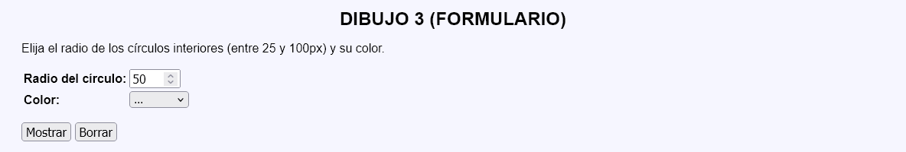
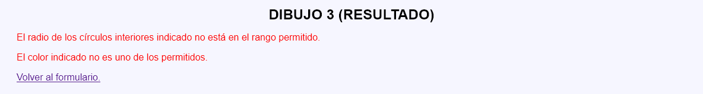
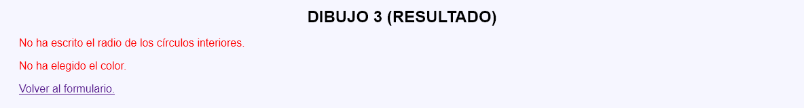
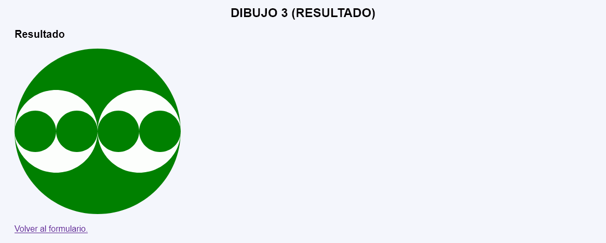

En este ejercicio se debe crear un programa que pida un tamaño en píxeles (entre 25 y 100) y un color y muestre un dibujo SVG que incluye cuatros círculos del tamaño y color elegidos.

 

<p>
<svg version="1.1" xmlns="http://www.w3.org/2000/svg"
width="800" height="800" viewBox="-400 -400 800 800">
<circle cx="0" cy="0" r="400" fill="blue" />
<circle cx="-200" cy="0" r="200" fill="white" />
<circle cx="-100" cy="0" r="100" fill="blue" />
<circle cx="-300" cy="0" r="100" fill="blue" />
<circle cx="200" cy="0" r="200" fill="white" />
<circle cx="100" cy="0" r="100" fill="blue" />
<circle cx="300" cy="0" r="100" fill="blue" />
</svg>
</p>
<p>
<svg version="1.1" xmlns="http://www.w3.org/2000/svg"
width="400" height="400" viewBox="-200 -200 400 400">
<circle cx="0" cy="0" r="200" fill="red" />
<circle cx="-100" cy="0" r="100" fill="white" />
<circle cx="-50" cy="0" r="50" fill="red" />
<circle cx="-150" cy="0" r="50" fill="red" />
<circle cx="100" cy="0" r="100" fill="white" />
<circle cx="50" cy="0" r="50" fill="red" />
<circle cx="150" cy="0" r="50" fill="red" />
</svg>
</p>